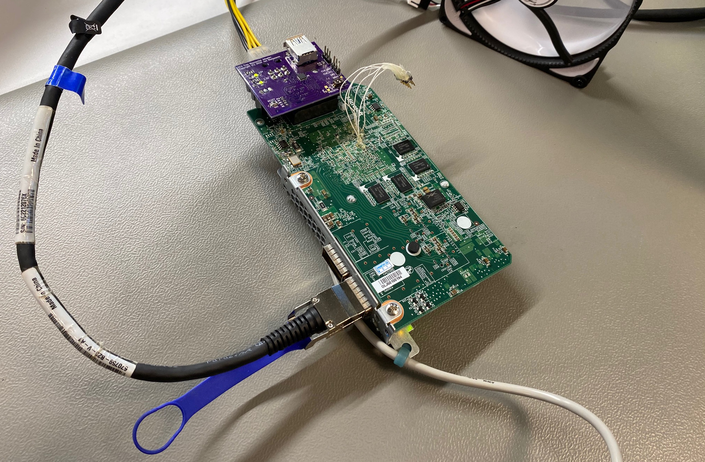
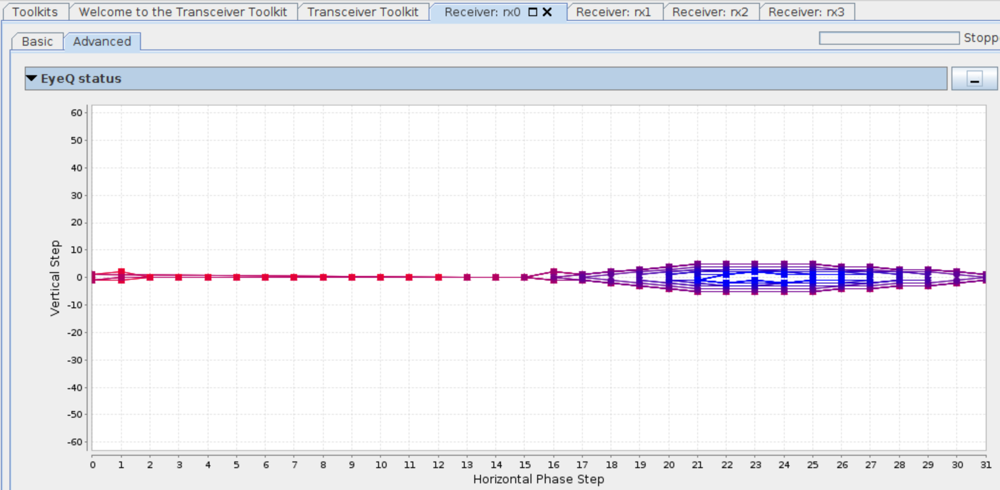
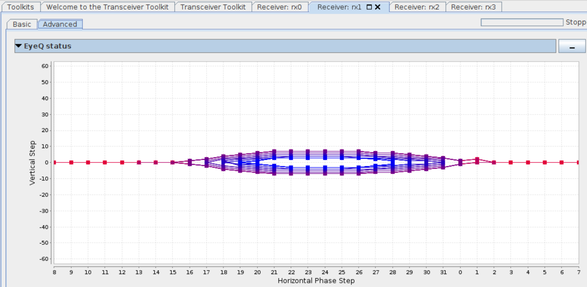
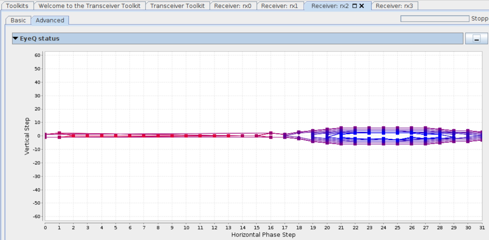
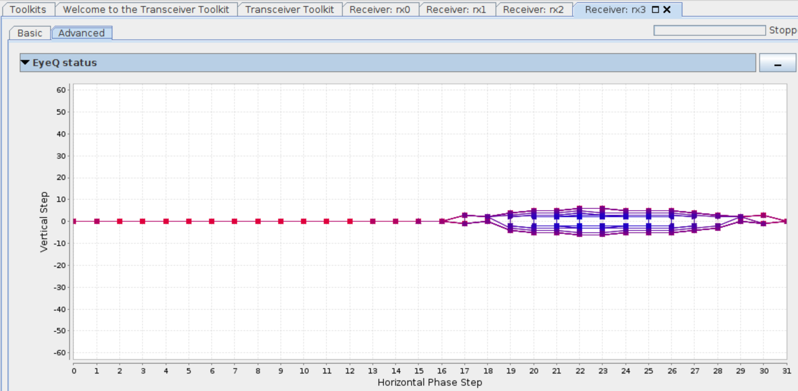
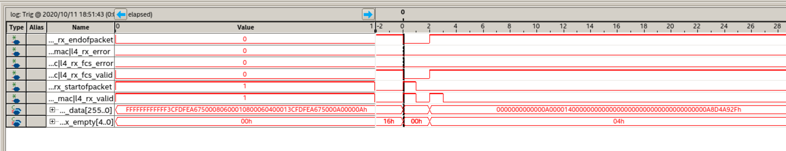

- on Sun 11 October 2020
In the part 4 of the Odyssey with the Startix V board from the eBay, I explore the QSFP+ port and establish a 40 Gigabit Ethernet connection to a computer with an Intel X710 40GbE network adapter.
HW overview
Since this board was designed to run in a datacenter, the connectivity is of major importance. The board can connect to the host CPU over PCIe x16 connection, and can communicate with other boards and external world over 2 QSFP+ connectors.
The transceivers in the Stratix V GS can operate at 14.1 Gbps, which means that the board can run 40 Gigabit Ethernet (4x10.3125 Gbps), InfiniBand FDR (56 Gbps = 4x14.0 Gbps) and other fast protocols.

QSFP+ management interface
As described in SFF-8436: Specification for QSFP+ 4X 10 Gb/s Pluggable Transceiver, the QSFP module contains a relatively simple management interface, accessible over an I2C bus.
First I implemented a mini equivalent to i2cdetect to check if I am probing a
correct I2C bus. As expected, an I2C device with address 0x50 replies to our
request:
0000 | -- -- -- -- -- -- -- -- -- -- -- -- --
0010 | -- -- -- -- -- -- -- -- -- -- -- -- -- -- -- --
0020 | -- -- -- -- -- -- -- -- -- -- -- -- -- -- -- --
0030 | -- -- -- -- -- -- -- -- -- -- -- -- -- -- -- --
0040 | -- -- -- -- -- -- -- -- -- -- -- -- -- -- -- --
0050 | 50 -- -- -- -- -- -- -- -- -- -- -- -- -- -- --
0060 | -- -- -- -- -- -- -- -- -- -- -- -- -- -- -- --
0070 | -- -- -- -- -- -- --
We can then continue by dumping the content of the module EEPROM:
rc = 0 | 0d 02 06 00 00 00 00 00 00 00 00 00 00 00 00 00
rc = 0 | 00 00 00 00 00 00 00 00 00 00 00 00 00 00 00 00
rc = 0 | 00 00 00 00 00 00 00 00 00 00 00 00 00 00 00 00
rc = 0 | 00 00 00 00 00 00 00 00 00 00 00 00 00 00 00 00
rc = 0 | 00 00 00 00 00 00 00 00 00 00 00 00 00 00 00 00
rc = 0 | 00 00 00 00 00 00 00 00 00 00 00 00 00 00 00 00
rc = 0 | 00 00 00 00 00 00 00 00 00 00 00 00 00 00 00 00
rc = 0 | 00 00 00 00 00 00 00 00 00 00 00 00 00 00 00 00
rc = 0 | 0d 00 23 08 00 00 00 00 00 00 00 05 8d 00 00 00
rc = 0 | 00 00 02 a0 4d 65 6c 6c 61 6e 6f 78 20 20 20 20
rc = 0 | 20 20 20 20 0f 00 02 c9 36 37 30 37 35 39 2d 42
rc = 0 | 32 33 20 20 20 20 20 20 41 31 04 06 09 00 46 27
rc = 0 | 00 00 00 00 36 43 32 32 31 32 30 37 36 58 20 20
rc = 0 | 20 20 20 20 31 32 30 33 32 37 20 20 00 00 00 64
rc = 0 | 00 00 00 00 00 00 00 00 00 00 00 00 00 00 00 00
rc = 0 | 00 00 00 00 00 00 00 00 00 00 02 00 00 30 00 00
The cable is correctly identified as Mellanox 670759-B23 cable.
40G Ethernet MAC
To implement the physical layer of the Ethernet protocol I used 40- and 100-Gbps Ethernet MAC and PHY MegaCore. Without an appropriate license this IP can be evaluated for an hour, which is not a lot, but enough to test the hardware capabilities of the FPGA board.
To clock the transceiver part I have used the 644.53125 MHz on-board oscillator which I have explored in detail in my previous post. The application part is clocked at 312.5 MHz, generated from the same 644 MHz oscillator.
In the Qsys I have added a Transceiver Reconfiguration Controller and connected it to a JTAG to Avalon Master Bridge, so that I can perform Eye Scan measurements and change other transceiver configurations.
With everything in place, I have programmed the bitstream to the FPGA, and the
dmesg output in Linux on the other side of the link reported some good news,
the link is up:
[ 615.469842] i40e 0000:01:00.0 enp1s0: NIC Link is Up, 40 Gbps Full Duplex, Flow Control: None
Eye scan
Once the link is established, we can use Transceiver Toolkit EyeQ to verify the link quality on the receiver. EyeQ circuitry uses an additional data sampler to sample the receiving data at a time and voltage offset, and compares those to the one received from the center of the data eye. With this method, it can determine BER (Bit Error Rate) for each point in the 2D eye diagram.
Shown in figures below are the results from eye scan on all 4 lanes.




We can see that the eyes are not open very wide, but on the other hand this is an expected result with a relatively high data rate and a passive coper cable. Anyway, the eyes seems to be open wide enough to provide reliable transmission of the data.
Logic Analyzer
At this point we can use SystemTap II Logic Analyzer to capture the received packets from the 40G Ethernet MAC interface.
Shown in figure below is the capture with the SignalTap, with the data from an ARP packet, send from the PC when we want to ping an address.

An experienced reader will recognize a broadcast MAC address (0xFFFFFFFFFF),
ARP Ether Type (0x0806), and some other elements in the ARP packet.
Summary
In this short blog post I have explored the 40 Gigabit Ethernet on the Stratix V board. I have managed to establish a link to a computer, and verify the signal integrity of the received signals.
For the next post I will prepare a minimal UDP/IPv4 core, and transfer some UDP packets between the computer and the FPGA.
All trademarks and registered trademarks are the property of their respective owners.